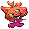

Preparando el generador…

El generador (8,4 M parámetros, estilo BigGAN) comparte un tronco y termina en dos cabezas: frente y espalda salen del mismo vector latente, con la misma paleta y anatomía. La coherencia de paleta de cada ficha se mide aquí mismo, con la métrica del proyecto.
Los tipos entran como suma de embeddings en cada BatchNorm condicional, así que también funcionan combinaciones que no existen en los datos. «Los 18 tipos» fija el vector latente y solo cambia el tipo.
El generador se exportó a ONNX y corre con ONNX Runtime Web (WebGPU si está disponible, si no WebAssembly). Nada se envía a un servidor. Los estilos de sprite son solo de visualización; «Original» es la salida cruda.